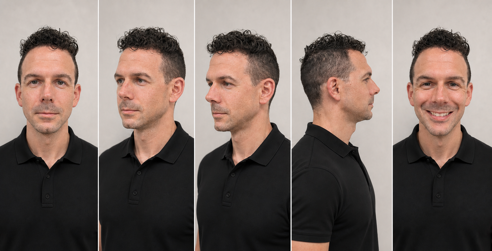
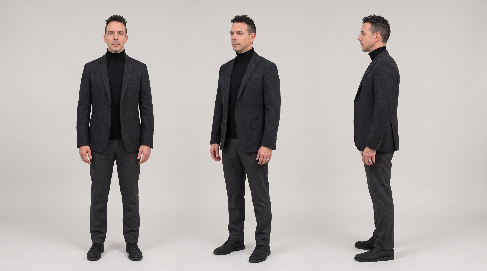
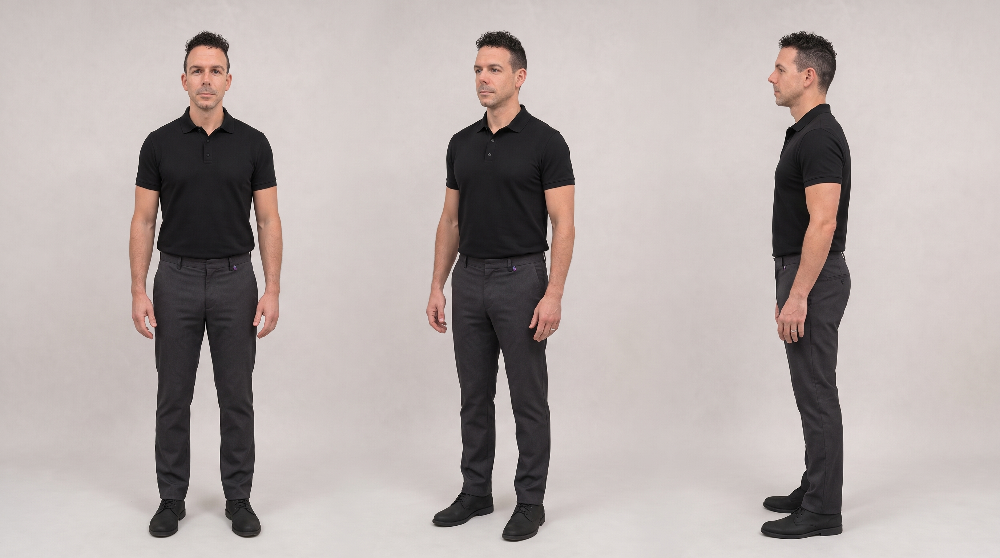
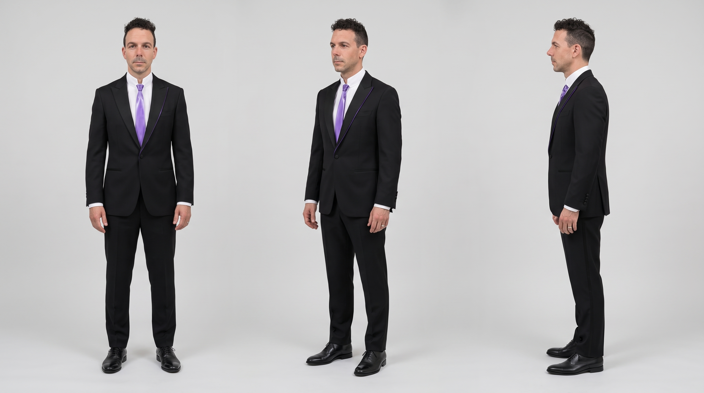

Section B
Personal Branding
Use Michael's presence, Character Sheet, wardrobe, and photography consistently.
On this page
01
How Michael shows up
Presence
Calm independent judgment. Exact, quiet, cultivated.
Wardrobe
Primary turtleneck-blazer with a tiny Seam Violet glass lapel seam; complementary teaching and media outfits.
Behavior
Follow the question: teach, inquire, publish, judge.
Aesthetic
Counterpoint world with The Seam adaptive purple glass.
02
Character Sheet




03
How to use it
- Use the approved no-glasses face canon for any recognizable Michael image
- Default to the turtleneck inquiry outfit
- Show Michael inside inquiry: desk evidence, teaching, or media
- Keep glasses rare: one small media frame only, and never use the temporary stylescape as a likeness seed